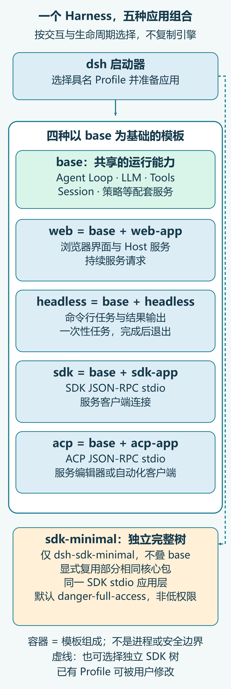
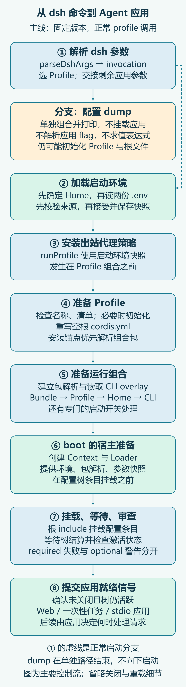
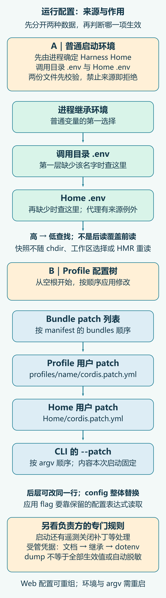

H04 作者审阅页 · 未发布。实际 LessonMarkdown 的静态渲染，折叠答案可展开；课程版本的复制交互已另经 React 挂载测试。图片在本页映射为相邻文件，不改变教材的 /course-media 路径。
Profile、运行入口与环境配置：Harness 如何启动不同的 Agent 应用？
110～150 分钟（可分两次学习；实际时长待试读）
四个人想用同一个项目助手
上一课，我们跟着“读取 README，概括主要功能”走完了一次请求。现在，做这个助手的团队遇到另一个问题。
运营同事希望打开浏览器就能聊天；开发者想在命令行交给它一项任务，做完输出答案；数据同事希望从 Python 程序调用它；编辑器作者则希望通过约定好的协议接入。
这四种需求首先改变的是怎样与应用交互、进程要活多久、需要哪些应用服务。它们并不要求重新写四份 Agent Loop、工具系统与会话管理。可也不能只在同一个进程外面换四个按钮：浏览器需要页面和网络入口，一次性任务要知道何时退出，协议进程的标准输出还得保持为协议数据。
H04 要研究的就是这些差异如何被启动器和配置组织起来。课末，你应能拿到一条命令，解释谁解析它、配置从哪里来、最后启动哪种应用；遇到错误时，也能指出应先查哪一层。
用六分钟复习：命令、进程、配置与产物
Stage 1 的准备课已经让你在能看到 package.json 的目录中执行 npm install、npm run dev。前者准备依赖，后者运行清单中名为 dev 的任务。开发服务器持续运行，浏览器才有本地地址可访问；“依赖装好了”和“应用已启动”不是同一状态。
Stage 2 的部署课进一步区分本地开发、生产构建、云端运行与生产环境变量。本地 .env 没有随着源码提交，就不会自动出现在部署机器上。Stage 3 则把 API Key 留在服务端，由 Provider 读取，浏览器只向自己的接口提问；Stage 4 在服务端继续控制工具、预算与停止。
把这些知识换到今天的仓库：Node.js 是执行宿主代码的环境；包管理器准备依赖；脚本决定从哪里运行；构建产物是被运行或交付的文件；配置决定这次怎样运行。 少了其中某项，不一定会在同一个阶段报错。
想深入再看：基础回顾：环境变量不是自动生效的文本文件
进程环境是程序启动时继承的一组名字和值，Node 可以通过 process.env 访问。.env 是文件，必须由某段程序读取和解析，才会影响应用。不同框架可以有不同的文件搜索和覆盖规则；不能因为 Next.js 项目用过 .env，就认为 Harness 会搜索同样的文件。
命令参数是这一次调用传入的 token（参数片段），例如 --port 和 8080；环境变量通常由启动环境提供；配置文件是应用选择并解析的数据。三者可以共同影响结果，但需要具体代码说明谁优先。
已有原课权限时，可选回看 Stage 1 准备与启动、2.8 部署、3.1 服务端模型接入、4.1 受限 Agent Loop。本课的说明自足，不要求另有这些课程的购买权限。
六个词，分别回答六个问题
**CLI（命令行界面）**回答“用户怎样输入操作”。敲一条命令、传参数、读输出，就是一种交互方式。它不等于 Agent 的执行引擎，也不意味着所有工作都在终端中呈现。
**Launcher（启动器）**回答“哪段程序负责把应用拉起来”。在锁定版本里，dsh 是受支持的 Node 应用启动器；它选择运行模式，必要时交给对应 runner。CLI 是交互形式，Launcher 是承担启动职责的具体程序。证据是 CLI 定位与入口表，5–20 行，以及 runCli()，26–69 行。
**Profile（运行配置档）**回答“这次使用哪套应用组合”。像同一套厨房可以按早餐、外送或堂食的开工单工作：选择的设备、交付方式和工作节奏不同，不必复制一套厨房代码。技术上，本版本的具名 Profile 是 Harness Home 下的目录，包含声明组合包顺序的 package.json，以及自己的用户覆盖文件。它有可修改状态，不只是一个枚举标签；目录约定见 Profile 与路径解析，74–99、165–172 行和 resolveProfileDir()。
**Bundle（插件组合包）**回答“这批可复用配置从哪里提供”。可把它理解成开工单引用的一组现成安排；技术上，它是声明了 dsh.bundle.patch 的包，为 Profile 提供配置层。这里还不能把 Bundle 当成一个大插件实例：它主要交付的是组合描述，实际能力由其中的插件行挂载。见组合包分组说明，10–32 行。
**Runtime（运行时）**沿用 H01 的运行职责：调度、检查、分派与状态推进。今天说“启动运行环境”，是把这些服务与扩展点装配到可工作的应用中，不是每次切换 Profile 都重新实现循环。**Application（应用）**则是这次交给使用者的具体交互：Web 聊天、一次性任务，或供客户端调用的协议服务。
厨房类比到这里就应收住：配置可能引用实际代码和 !!js 表达式，插件可以产生副作用；它不是一份天然安全、任意替换都无影响的菜单。也不能反过来说“应用都是同一个产品，只改一个名字”：不同组合会实际增减服务、工具、策略和呈现能力。
先检查一下：dsh --profile web 中，哪个词是启动器，哪个是选择的运行配置？浏览器里的聊天应用又属于哪层？答案分别是 dsh、web Profile、Application；模型请求还没有因为这条命令就必然开始。
五种 Profile：先看交互，再看组合
下面说的是随附模板。它们首次使用时可自动初始化；已有 Profile 可以被修改，不能只凭目录名字认定里面仍是默认组合。真实模板清单在 PROFILE_TEMPLATES，10–25 行。
| Profile | 面向的场景与入口写法 | 交互、能力与运行时长 |
|---|---|---|
web | 普通用户用浏览器；dsh web | base + web-app，提供浏览器界面及对应 Host 服务；进程持续运行来服务请求 |
headless | 终端交付一项任务；dsh headless "概括项目说明" | base + headless，无 Web server；runner 执行任务、打印结果，再退出 |
sdk | Python/TypeScript 等程序通过 SDK 调用；dsh --profile sdk | base + sdk-app，使用 SDK JSON-RPC 标准输入输出；连接关闭或请求 shutdown 后按所属流程结束，可在连接期处理会话 |
sdk-minimal | 明确需要独立小型配置树的 SDK 客户端；dsh --profile sdk-minimal | 只有 sdk-minimal 组合包，不叠 base；同样使用 SDK stdio 应用层，但能力、凭据来源和策略另行显式配置 |
acp | 编辑器或自动化客户端使用 ACP；dsh --profile acp | base + acp-app，使用 ACP 协议的标准输入输出；服务到客户端断开或关闭 |
这里的命令是语法对照，本课不执行。表格说明默认应用的生命周期，不表示每次“进程启动成功”都已经完成用户任务。CLI 运行目录也会参与默认工作区选择；SDK、ACP 后续协议请求还能提供会话工作目录，不要把所有会话都锁死成同一个目录。
SDK 与 ACP：两套协议，不是两个 HTTP 端口
SDK（软件开发工具包）通常让程序作者用熟悉的语言调用能力。在这里，要区分客户端库与它启动或连接的 Harness 运行进程。sdk Profile 是进程里的应用组合，不是 Python 库本身。
随附 SDK 服务把标准输入作为输入、标准输出作为输出，以按行传输的 JSON-RPC（基于 JSON 的远程过程调用）交换消息。可以把它想成客户端与子进程之间的双向数据管道；不用把它改称 HTTP 服务。源码实际建立 JsonRpcLineTransport(input, output)，45–64 行，输入输出默认是 process.stdin 和 process.stdout。模型提供方、模型与会话工作目录通过 SDK 初始化请求传入，不是把任意模型选项塞进 dsh 的通用 flag。SDK 启动提供方把 EOF（输入结束）接到关闭流程，见 sdk-app.apply()，55–61 行。
ACP（Agent Client Protocol，智能体客户端协议）也是一套供客户端与 Agent 协作的约定。这个 Profile 使用 ACP 的换行 JSON-RPC stdio 传输，源码通过 ndJsonStream，374–384 行接到标准输入输出；应用提供方见 acp-app.apply()，41–47 行。SDK 与 ACP 的方法、数据和能力协商不同，共用 stdio 不表示协议可以互换。
这种管道类比只解释传输方向，不表示通信天然可信。stdout 专用于协议帧，随意插入 console.log 可能破坏通信；客户端能要求什么，还要看协议和宿主能力。见 SDK 的 stdout 与自定义 Profile 限制。
为什么必须单独看 sdk-minimal
这个名字里的 minimal 指组合显式、依赖较少，不能理解成权限更小。其默认树不含 base、Web、settings、受管凭据、jobs 或 subagent 等完整产品基础，却包含持久 shell 等编程能力；官方说明 10–12 行与完整树开头可以对照。

看这张图时，用 H02 的方法问“它挂载了什么”，不要只问“文件夹叫什么”。base 的默认 agent-loop.config.agents 为空，见 511–516 行：应用就绪后，具体实例何时创建还取决于 Web 会话、SDK 初始化或一次性 runner 等入口。
一条命令经过两次参数解析
先读这两个例子。它们只交换 --patch 的位置：
dsh --profile web --patch ./extra.yml --port 8080
dsh --profile web --port 8080 --patch ./extra.yml在第一行，启动器领取 Profile 与额外覆盖文件，把 --port 8080 原样交给应用。第二行中，--port 是启动器不认识的第一个 token，后面的 --patch ./extra.yml 也一起归应用了。Web 应用并没有因此得到一个启动器 overlay，它还可能把这个不认识的 flag 当使用错误。
这不是“flag 名字写对就总能生效”。官方 parseDshArgs() 的配置，146–185 行使用按位置交接的解析方式，调用方测试直接核对早写与晚写参数的不同结果，35–57 行。
| 层次 | 本例中的内容 | 不应混到哪里 |
|---|---|---|
| 启动器参数 | --profile、前置 --patch、配置 dump flag | 不由模型解释，也不是 Web 端口值 |
| 应用参数 | Web 的 --port、--help；Headless 的任务文本 | 由该应用定义，不保证换 Profile 后仍有效 |
| 运行配置 | Bundle、用户 patch 中的插件行与 config | 决定服务和默认值，不等于一条模型请求 |
| 模型请求参数 | 选定模型、输出控制、消息、工具描述等 | 来自模型与 Agent 服务；不能把任何 --xxx 都当 dsh 通用模型开关 |
dsh --help 是启动器帮助；dsh web --help 交给 Web 应用。后者走 Profile 准备与应用解析路径，不能据此宣称它完全没有配置文件副作用。SDK/ACP 的启动提供方会在接受调用后才让协议服务接管 stdio，因此应用 help 不会启动它们的传输服务。
应用拿到的是共享的不可变参数快照，不是读一次就少一个参数的队列。证据在 provideCmdline()，84–89 行。本课只理解“启动器交接，应用拥有自己的语法”，其服务注入细节留下一模块。
沿着启动器，走到应用就绪
先看图，再按后面的五个文件走一遍。与 H03 不同，这条线发生在处理具体用户请求之前；Web 或协议应用启动成功后，仍要等实际输入才进入相应请求路径。

第一站：args.ts 决定“要做什么”
打开 apps/cli/src/args.ts 的 resolveBoot()，111–135 行，再回看 parseDshArgs()。输入是 Node 和脚本名之后的参数，输出是 profile、dump-config、dump-config-schema 或 plugin 等 invocation（本次调用描述）。
先看输出类型再看分支，可以避免把“打印配置”误当成“启动后顺便打印”。本课研究启动与两种配置值 dump；schema dump 会导入插件声明来读取 schema，不把它当作检查任意陌生插件的安全预览。
第二站：bin.ts 分派，不承担应用功能
runCli()，26–69 行先解析参数，再按 mode 动态加载对应 runner。正常 profile 分支调用 loadLayeredEnv('dsh')，把环境快照与 Profile、patch 文件、应用参数交给 runProfile()；dump 分支调用的是另一个函数，不会先走这次分层环境加载。
这里主要是分派。找不到 Web 端口 flag，不应该在 bin.ts 加一个；应该去应用的启动提供方。启动器参数解析错误、环境来源被拒绝、Profile 加载失败，也都不是模型输出错误。
第三站：profile-boot.ts 准备这一套运行环境
先读 prepareProfile()，194–199 行，再读 composeProfile()，224–235 行。它们取得 Profile、建立运行时解析信息，并按传入顺序读取额外覆盖文件。--patch 路径相对本次调用目录解析，不会自动变成相对 Profile 的路径。
接着读 runProfile()，271–339 行。真实顺序值得记住：先从已冻结的环境安装代理策略，再组合 Profile；之后创建关闭与就绪机制，交给 boot()。在配置树挂载前，回调提供 profileContext、启动环境、包解析和应用参数等启动器事实。
boot() 等待配置树结算、做激活审查后返回；启动器确认未被关闭且树仍活跃，才提交 appReady，见 340–345 行。因此“命令已解析”“树已挂载”“应用已就绪”是不同进度，不能只凭一条启动日志推断所有服务可用。
第四站：profile.ts 回答“目录与组合从哪里来”
resolveProfileDir()拒绝空名、路径分隔符、.、.. 与 node_modules，再拼接 Home/profiles/name。参数解析器可以接收一个自定义名字，但加载阶段 728–744 行会检查其清单是否存在：随附名称才会按模板自动初始化，未知的自定义名称不会悄悄退回 web。
每个 Bundle 先从这份 dsh 安装目录解析，再从 Profile 解析，见 resolveBundleDir()，639–661 行。这解释了为什么“Profile 里放了一个同名包”不一定能取代安装随附的包。深层解析和包刷新留 H08/H30，本课到这个边界就停。
第五站：app-boot/index.ts 挂载，而不是复制一个应用
boot()，1203–1244 行建立 Context、挂载 Loader，先运行宿主准备回调，再挂载根配置，等待树结算和审查。Context 暂时理解为服务共用的工作环境，Loader 暂时理解为按配置挂载能力的执行方；不要在 H04 先背完它们的内部规则。
至此，同一启动机制接入了不同的应用层。**我们的分析：**共享这条路径能减少各应用重复实现环境、配置和关闭流程的机会；代价是定位问题时必须区分启动器、配置组合、插件激活和应用自己的错误。是否每项细节都是为某个性能原因而设计，没有直接依据时不猜作者动机。
三类配置来源，别画成一条万能优先级
Harness Home 与 Profile 目录
Harness Home 是保存 Harness 用户数据与配置的根位置。产品路径通过 resolveDshHome() 取得它，通常来自启动进程的 DSH_HOME，未设置时使用 ~/.dsh；底层 helper 还支持显式配置路径优先，见 Home 解析约定，125–136 行。它不是本次项目工作区，也不是仓库根目录。
为避免碰到个人配置，下图和练习都使用虚拟 /fixture/home。这是教学路径，Windows 实际路径分隔符不同，本课不在磁盘创建这棵 Home：
/fixture/home/
.env Home 环境文件
cordis.patch.yml 各 Profile 共用的用户覆盖层
profiles/web/
package.json dsh.profile.bundles 与依赖清单
cordis.patch.yml 这个 Profile 自己的用户层
cordis.yml 启动器生成/重写的空根下面只展示清单中的组合字段，是教学节选，不让你覆盖真实 Profile 文件。字段结构可对照 initProfile() 的 198–225 行。列表先选 base，再选 Web 应用层，顺序本身属于输入。
{
"private": true,
"dsh": {
"profile": {
"bundles": ["@deepseek-ai/dsh-base", "@deepseek-ai/dsh-web-app"]
}
}
}cordis.yml 在这个 Profile runner 中是 Loader 锚点，启动器会重写为空列表，不应把用户定制直接写进去；用户层在 cordis.patch.yml。证据是 prepareProfile() 前的约定，179–199 行。Profile 清单还管理其外部插件依赖，不表示要把全仓复制进这个目录。
普通启动环境：先限制来源，再比较优先级
loadLayeredEnv() 先确定 Home，保存进程继承环境，然后读取**调用目录的 .env**与 Home 的 .env。两份文件都通过来源校验之后，才物化接受的值，并保留来源快照。普通变量按下面顺序查找：
继承的进程环境 > 调用目录 .env > Harness Home .env证据是 236–256 行与实际分层测试。这里是启动时的调用目录，不向父目录搜索，也不因为后来选择了另一个 Session 工作区而再读取一次。Profile 目录的 .env 不因其身份自动成为第四层。
优先级之前还有来源限制。文件不得决定启动程序从哪里装代码或怎样改变信任条件，例如 DSH_HOME、DSH_* 开关、PATH、NODE_OPTIONS 和指定的 Base URL、CA/TLS 变量被拒绝。它们不是“被更高层盖住就无所谓”：文件里声明了不允许的名字，即使进程中已有同名值，也会拒绝启动，而且校验失败前不会先应用另一份文件。见限制清单与检查 133–222 行和原子拒绝测试 139–159 行。
代理有明确例外：Home .env 可以提供 HTTP_PROXY、HTTPS_PROXY、ALL_PROXY、NO_PROXY，调用项目 .env 仍被拒绝；CA/TLS 变量不享有这个例外。运行器会把解析出的策略用于出站 HTTP，而不是仅假定 Node 会自动使用所有代理设置。源码的例外定义、Home 代理测试与 runProfile 中的安装可以互相核对。本课不实际发网络请求验证代理覆盖范围。
组合配置：顺着列表应用，后层改写前层
对于 Profile 配置树，读取顺序又是一套规则：空根 → 清单顺序中的 Bundle patch → Profile 用户层 → Home 用户层 → argv 顺序中的 --patch。实现直接在 readProfilePatches()，74–84 行列出顺序。启动时还有专门的遥测关闭开关处理，不宜把一般层序图当成所有部署开关的完整定义。
Home 配置层在 Profile 层之后，因此能修改同一配置行；这与环境变量中的“项目 .env 优先于 Home .env”不矛盾。两处处理的是不同数据、由不同代码规定顺序。
Patch 先理解为“对配置树的修改清单”，可以改某行或插入行。本课只记住一个会影响实际判断的细节：按 id 替换 config 时，是整个 config 值替换，不是按键深度合并。后续只写一个键，可能丢掉原来同一 config 的其他字段。算法和 Bundle 嵌套规则留 H08；不要据此给真实个人配置做大范围改写。

想深入再看：凭据为什么不能直接套用普通环境优先级
普通启动环境不是全部凭据机制。受管凭据提供方启用时，实际 resolve() 先查已保存的受管文档，再查非空的继承环境，再查 dotenv 回退，见 credentials-local/src/index.ts，624–631 行及受管文件优先的测试，79–87 行。它不会把受管秘密值写入 process.env。
CLI 参考的部署摘要 139–144 行给出了不同顺序；这里依据同一 Commit 的实现与测试，差异已登记在源码核对清单中，不把矛盾藏起来。Headless 默认禁用交互式凭据提供方，使用启动环境，见 headless patch 的 35–46 行；sdk-minimal 也不含该受管提供方。因此不能把这条受管规则推广到每个 Profile。
本课不打开 .credentials.yaml，也不显示 Key 值。排查时先核对提供方是否启用、引用的变量名和来源，不把秘密全文打印到日志。
怎样观察配置，哪些改动需要重启
dump 是组合前提的证据，不是所有运行值的照片
下面是固定版本的语法对照，不是要求你在个人 Home 上执行：
dsh --profile web --dump-default-config
dsh --profile web --patch ./extra.yml --dump-config--dump-default-config 只收集 Bundle 层，不读取 Profile、Home 的用户 patch，也不接受 --patch；--dump-config 把这些层纳入。两者都不启动应用，但可能初始化缺失的 Profile，并写入根文件，不能称为完全只读。其收集逻辑在 collectConfigDumpLayers()，51–74 行，准备与打印在 32–42 行。
输出会保留 !!js 表达式而不求值，并标注来源与修改层。dump 不运行应用参数提供方，因此下面的组合会被拒绝：
dsh --profile web --dump-config --port 8080证据在 resolveBoot()，122–135 行及配置输出测试 70–100 行。如果 dump 显示 ctx.webStartup.port ?? 3080，你读到的是表达式与后备值，不是“监听端口一定为 3080”。正常启动的遥测关闭补丁也有额外处理；dump 本身不证明插件激活、端口绑定、网络可达或模型可用。
配置表达式保留，也不代表输出天然脱敏。写在 config 中的字面量秘密仍可能出现在 dump；schema dump 还会导入插件声明。不要将真实完整配置、协议帧、启动诊断或 .env 直接贴进聊天或提交。教学练习只展示固定的非秘密值。
配置 HMR 不等于所有文件都可以热改
HMR（热重载）先理解为“进程不整体重开，把允许变化的部分重新应用”。像营业中更换一组工作安排，但不是把所有设备和人员都瞬间替换。技术上，要看哪个插件监视哪些文件、重组哪些配置；它不是一个全局魔法开关。
在随附组合里：
| 改动 | 本课可以据源码得出的行为 |
|---|---|
| Web 的 Profile manifest、Profile patch、Home patch | base 在 Profile 环境启用配置 HMR，监视这些输入；变更可走统一重组路径，失败仍需看诊断 |
| headless、sdk、acp 的这些配置 | 应用 patch 明确禁用 hmr，下一进程才采用改动 |
| sdk-minimal | 完整树未挂载 hmr，配置只在启动时应用 |
.env、启动 argv、已读入的 --patch 内容 | 属于本次启动快照或固定 overlay；不要期待配置 HMR 自动重读，修改后重新启动 |
| 任意插件源码或旧的浏览器产物 | 配置重载不等于任意模块热替换；源码/产物更新要按相应构建与运行流程处理 |
依据是 base 的 hmr 行 27–32、headless 禁用、SDK 禁用、ACP 禁用，以及监视 manifest、Profile/Home patch 的实现，377–414 行。base 的 root: [] 表示模块监视根没有默认展开，不能把配置 HMR 与所有模块 HMR 混为一谈。
Web 端口 flag 的优先级还有一个前提：配置保留读取 webStartup 的表达式。随附 Web 行 171–177用 ctx.webStartup.port ?? 3080，有 flag 时读它，没有时取后备。若用户层把整个 config 换成字面量 port: 9090，便丢了这条读取关系，不能坚持认为 --port 永远最高。本课实验专门比较这两种情况，H08 再展开树更新和卸载原理。
出错时，先确定失败发生在哪一层
下面是定位路线，不是“一键修好”的命令。先记版本、Profile、参数边界、配置来源及第一条有效错误，不输出秘密。恢复只处理已经定位的文件或配置，不删除整个工作区、Home 或个人数据。
| 现象 | 可能原因与先查路径 | 正确恢复方式 |
|---|---|---|
| 很早就出现语法/内置 API 错误 | 核 node --version 与根 engines；锁定版本要求 >=24.9.0 | 在独立源码环境切换受支持版本，重开该环境终端再核；不把本课小实验的 Node 20.19 要求当官方要求 |
| pnpm 不存在、workspace 依赖没装好 | 根 packageManager 固定 pnpm@11.28.5；核当前目录、版本与安装首个错误 | 使用仓库指定工具链准备这份固定 checkout；不在 AI Foundry 根目录安装 Harness 依赖，不先删除 lock 或全目录 |
| Profile 不存在或名称非法 | 解析接受名字不代表目录有效；核 templates 与 resolveProfileDir/loadProfile | 修正名称；自定义 Profile 需明确准备；不静默切换成另一个模式 |
--patch 未生效，或应用报未知选项 | 看它是否位于第一个应用参数之后；对照 args 测试 | 把启动器 flag 放到应用参数之前，再核应用自身 help；不改源码硬接一个错误 flag |
| 应用就绪，但模型调用仍失败 | 核模型路由是否存在、对应提供方和凭据来源；SDK 模型可来自初始化请求 | 只修正确认缺失的路由或凭据引用，重试最小检查；不以 UI 能打开证明模型可用，不把 Key 放到 URL/argv |
| 组合包无法解析或插件等待服务 | Bundle 加载可能先记录 skippedBundles 警告，required 条目失效才导致致命审查；optional 失败不保证全树退出 | 核安装锚点、Profile 依赖、包版本与真实缺失服务；恢复正确依赖/配置，读原始原因；不随意豁免版本或禁掉必需检查 |
.env 存在却被拒绝或变量没变化 | 核调用目录、Home、禁止名字、继承同名值；不是先打印文件全文 | 把只能由启动环境提供的设置移到正确来源；修正具体文件中的名字；重启建立新快照 |
| 配置保存后效果没变 | 核 HMR 是否启用、覆盖顺序、字面量是否替掉表达式、overlay 是否已冻结 | 对照组合预览和应用实际值，修正确切来源；需要时有序关闭再启动，不删除个人 Profile |
| 源码更新后浏览器仍像旧版 | pnpm dsh 不负责 build，也不检查产物是否新鲜 | 在独立固定仓库按官方流程构建，再启动；不能只反复刷新网页 |
工具链证据在根清单 1–10 行；源码入口与构建前提见CLI 开发说明 56–60 行。Bundle 的“跳过并报告”是实际加载分支 678–712 行，必需与可选条目的激活审查在 auditStartupEntries()，1156–1200 行，不能仅凭 README 的笼统错误描述判定全树行为。
另有一个看起来像修复命令的危险选项：--from-default-profile 会替换自定义目标，包含原依赖与用户 patch，并不是把缺失字段补上。参见初始化约定 90–107 行。本课不运行它，不把它作为默认恢复建议。
练习 A：为五个场景留下选择依据
这次不要只填一个名字。你需要让另一位同学按你的记录找到相同的启动器、应用提供方和组合包。
建议查找顺序：CLI 入口表 → PROFILE_TEMPLATES → 对应 Bundle patch → app 提供方或协议传输代码。不要从英文包名猜功能；A 中 SDK 与 ACP 都有 stdio，也不能据此互换答案。
想深入再看：练习 A 参考解析：入口共享，应用层不同
browser 是 web，组合 base + web-app，Web 启动提供方解析端口等参数。once 是 headless，组合 base + headless，runner 拿任务并最终输出退出；不需要 Web server。
python 在题设“完整 SDK”下选 sdk，组合 base + sdk-app，用 SDK JSON-RPC stdio；editor 按题设 ACP 选 acp，组合 base + acp-app，用 ACP stdio。它们各自服务客户端生命周期，而不是每个请求启动一个普通 HTTP 服务。
explicitMinimal 是 sdk-minimal，其 bundles 只有 @deepseek-ai/dsh-sdk-minimal。它仍复用 sdk-app 的启动提供方代码，但完整配置树与权限另外定义。公共 entry 都是 apps/cli/src/bin.ts，不应虚构五个公开 bin。完整路径与包名在下面合并答案中。
如果换一个客户端或需求，合理选择也可能改变。本题的自动检查固定这些已写明的条件，不代替分析真实部署需求。
练习 B：把启动配置追踪到具体结果
现在只研究一个 Web 夹具。它全部在内存中，不读取个人环境，也不创建真实 Home。
参数是 --profile web --patch ./extra.yml --port 8080。虚拟启动进程提供 DSH_HOME=/fixture/home 和非秘密变量 COURSE_THEME=night；项目环境中同名值是 day，Home 环境中是 mint。manifest 的 Bundle 列表与随附 Web 模板一致。
配置层的端口后备值分别为：web-app 3080、Profile 4100、Home 4200、extra.yml 4300。每层都保留 ctx.webStartup.port ?? 后备值 这条读取关系，并重述其 config 中需要保留的字段。这里研究的是配置来源，不是建议把真实 Web 服务器这样部署。
在自己新建的空目录 h04-launch-lab 中，用编辑器创建 answer.json。先填写下面模板，不写真实 Key 或私人路径。所有路径都是仓库相对路径或本课虚拟路径。
{
"A": {
"browser": {
"profile": "",
"entry": "",
"app": "",
"bundles": []
},
"once": {
"profile": "",
"entry": "",
"app": "",
"bundles": []
},
"python": {
"profile": "",
"entry": "",
"app": "",
"bundles": []
},
"editor": {
"profile": "",
"entry": "",
"app": "",
"bundles": []
},
"explicitMinimal": {
"profile": "",
"entry": "",
"app": "",
"bundles": []
}
},
"B": {
"selectedProfile": "",
"profileDir": "",
"launcherPatches": [],
"appArgs": [],
"themeSource": "",
"port": "",
"layerOrder": []
}
}运行固定检查，不启动 Harness
同一目录建立 launch-lab.mjs，复制完整程序。沿用 H01–H03 的 Node.js 20.19 及以上即可；官方仓库仍要求 Node 24.9.0 以上。
**教学简化：**程序只覆盖本课明确的 flag、按 id 替换完整 config、规定的环境名字，以及一条固定端口表达式。!!js ... 在实验里只是受限的字符串表示，不执行 JavaScript；course-shared/course-webserver 是虚构标识，不是官方包。它不模拟全部 Commander、Patch、模块解析、HMR、凭据或权限。CLI 只读取你刚建的 answer.json，不加载真实配置；不发生模型请求、网络、工具执行或子进程启动。
想深入再看：完整校验程序：复制到 launch-lab.mjs
// H04 教学简化：只模拟指定参数、完整 config 替换和固定表达式。
// 不加载 Harness、不读真实 Home/.env/凭据、不启动服务器、工具、模型或子进程。
import assert from 'node:assert/strict';
import { readFile } from 'node:fs/promises';
import { pathToFileURL } from 'node:url';
const BASE = '@deepseek-ai/dsh-base';
export const profiles = {
web: { bundles: [BASE, '@deepseek-ai/dsh-web-app'], app: 'packages/bundle/web-app/src/startup.ts', transport: 'browser-http', lifetime: 'service', hmr: true },
headless: { bundles: [BASE, '@deepseek-ai/dsh-headless'], app: 'packages/bundle/headless/src/startup.ts', transport: 'task-stdout', lifetime: 'one-shot', hmr: false },
sdk: { bundles: [BASE, '@deepseek-ai/dsh-sdk-app'], app: 'packages/bundle/sdk-app/src/index.ts', transport: 'sdk-jsonrpc-stdio', lifetime: 'client', hmr: false },
'sdk-minimal': { bundles: ['@deepseek-ai/dsh-sdk-minimal'], app: 'packages/bundle/sdk-app/src/index.ts', transport: 'sdk-jsonrpc-stdio', lifetime: 'client', hmr: false },
acp: { bundles: [BASE, '@deepseek-ai/dsh-acp-app'], app: 'packages/bundle/acp-app/src/index.ts', transport: 'acp-jsonrpc-stdio', lifetime: 'client', hmr: false }
};
export const casesA = { browser: 'web', once: 'headless', python: 'sdk', editor: 'acp', explicitMinimal: 'sdk-minimal' };
const fail = message => { throw new Error(message); };
export function parseLauncher(argv) {
// 仅覆盖本课语法；不实现 Commander、plugin、reset、schema dump 或所有 -- 规则。
const tokens = [...argv];
if (tokens[0] && !tokens[0].startsWith('-')) tokens.unshift('--profile');
let profile, mode = 'profile'; const patches = [];
const value = flag => {
const v = tokens.shift();
if (!v || v.startsWith('--')) fail(`${flag} 缺少值`);
return v;
};
while (tokens.length) {
const t = tokens[0];
if (t === '--profile') { tokens.shift(); if (profile !== undefined) fail('重复 Profile'); profile = value(t); }
else if (t === '--patch') { tokens.shift(); patches.push(value(t)); }
else if (t === '--dump-config' || t === '--dump-default-config') {
tokens.shift(); if (mode !== 'profile') fail('dump 互斥'); mode = t.slice(2);
} else break;
}
if (!profile) fail('缺少 Profile');
if (profile.toLowerCase() === 'desktop') fail('desktop 由 Electron 管理');
if (mode !== 'profile' && tokens.length) fail('dump 不接受应用参数');
if (mode === 'dump-default-config' && patches.length) fail('默认 dump 不接受 --patch');
return { profile, mode, patches, appArgs: tokens };
}
export function profileDir(home, name) {
if (['', '.', '..', 'node_modules'].includes(name) || /[\\/]/.test(name)) fail('非法 Profile 名称');
return `${home}/profiles/${name}`; // 虚拟 POSIX 路径，不访问磁盘。
}
export function selectEnv(processLayer, project, home) {
// 只实现本课示例名；完整 bootstrap 清单与平台大小写差异见官方源码。
for (const [source, layer] of [['project-env', project], ['user-env', home]]) {
for (const key of Object.keys(layer)) {
const upper = key.toUpperCase();
const proxy = ['HTTP_PROXY', 'HTTPS_PROXY', 'ALL_PROXY', 'NO_PROXY'].includes(upper);
const restricted = /^(DSH_|XDG_|DYLD_|BASH_FUNC_)/.test(upper) || ['PATH', 'HOME', 'NODE_OPTIONS', 'DEEPSEEK_BASE_URL', 'NODE_TLS_REJECT_UNAUTHORIZED'].includes(upper) || proxy;
if (restricted && !(source === 'user-env' && proxy)) fail(`${source} 禁止设置 ${key}`);
}
}
const result = {};
for (const [source, layer] of [['process', processLayer], ['project-env', project], ['user-env', home]]) {
for (const [key, value] of Object.entries(layer)) if (!(key in result)) result[key] = { value, source };
}
return result;
}
const expression = port => `!!js ctx.webStartup.port ?? ${port}`;
const webConfig = port => ({ host: '127.0.0.1', port: expression(port) });
export function fixture() {
return {
argv: ['--profile', 'web', '--patch', './extra.yml', '--port', '8080'],
process: { DSH_HOME: '/fixture/home', COURSE_THEME: 'night' },
projectEnv: { COURSE_THEME: 'day' }, homeEnv: { COURSE_THEME: 'mint' },
layers: [
{ label: 'bundle:base', patches: [{ insert: [{ id: 'shared', name: 'course-shared' }] }] },
{ label: 'bundle:web-app', patches: [{ insert: [{ id: 'webserver', name: 'course-webserver', config: webConfig(3080) }] }] },
{ label: 'profile', patches: [{ id: 'webserver', config: webConfig(4100) }] },
{ label: 'home', patches: [{ id: 'webserver', config: webConfig(4200) }] },
{ label: './extra.yml', patches: [{ id: 'webserver', config: webConfig(4300) }] }
]
};
}
export function compose(layers) {
const rows = [], warnings = [];
for (const layer of layers) for (const patch of layer.patches) {
if (patch.insert) { for (const row of patch.insert) rows.push(structuredClone(row)); continue; }
const row = rows.find(r => r.id === patch.id);
if (!row) { warnings.push(`缺少目标 ${patch.id}`); continue; }
// 这里仅模拟匹配 id 的 config 整体替换，不是通用 Patch 实现。
if (patch.config !== undefined) row.config = structuredClone(patch.config);
}
return { rows, warnings };
}
export function traceLaunch(input = fixture()) {
const invocation = parseLauncher(input.argv);
const home = input.process.DSH_HOME?.trim() || '/fixture/default-home';
const dir = profileDir(home, invocation.profile);
// 正常启动先加载环境；dump 分支不调用 loadLayeredEnv，也不解析应用参数。
const env = invocation.mode === 'profile' ? selectEnv(input.process, input.projectEnv, input.homeEnv) : undefined;
if (!profiles[invocation.profile]) fail('未安装的自定义 Profile');
if (invocation.profile !== 'web') fail('追踪夹具只模拟 Web；A 的其他 Profile 用事实表定位');
const chosen = input.layers.filter(l => l.label.startsWith('bundle:') || (invocation.mode !== 'dump-default-config' && (['profile', 'home'].includes(l.label) || invocation.patches.includes(l.label))));
const result = compose(chosen), server = result.rows.find(r => r.id === 'webserver');
if (!server) fail('缺少必需的 Web 配置行');
if (invocation.mode !== 'profile') return { mode: invocation.mode, profileDir: dir, layerOrder: chosen.map(l => l.label), unevaluatedPort: server.config.port, appStarted: false };
let appPort;
for (let i = 0; i < invocation.appArgs.length; i++) {
if (invocation.appArgs[i] !== '--port') fail(`Web 不认识 ${invocation.appArgs[i]}`);
const port = invocation.appArgs[++i];
if (!port || !/^\d+$/.test(port)) fail('Web 端口必须是数字');
appPort = Number(port);
}
const p = server.config.port, match = typeof p === 'string' ? /^!!js ctx\.webStartup\.port \?\? (\d+)$/.exec(p) : null;
if (typeof p !== 'number' && !match) fail('夹具不执行任意表达式');
const port = match ? (appPort ?? Number(match[1])) : p;
return { selectedProfile: invocation.profile, profileDir: dir, launcherPatches: invocation.patches, appArgs: invocation.appArgs, themeSource: env.COURSE_THEME?.source, port, layerOrder: chosen.map(l => l.label) };
}
export const reference = {
A: Object.fromEntries(Object.entries(casesA).map(([id, name]) => [id, { profile: name, entry: 'apps/cli/src/bin.ts', app: profiles[name].app, bundles: profiles[name].bundles }])),
B: { selectedProfile: 'web', profileDir: '/fixture/home/profiles/web', launcherPatches: ['./extra.yml'], appArgs: ['--port', '8080'], themeSource: 'process', port: 8080, layerOrder: ['bundle:base', 'bundle:web-app', 'profile', 'home', './extra.yml'] }
};
export function checkAnswer(answer) { assert.deepEqual(answer, reference, '请逐字段对照 A 事实与 B 追踪；理由需要自己解释'); return true; }
export function selfTest() {
assert.deepEqual(traceLaunch(), reference.B);
const late = fixture(); late.argv = ['web', '--port', '8080', '--patch', './extra.yml'];
assert.deepEqual(parseLauncher(late.argv).patches, []); assert.throws(() => traceLaunch(late), /Web 不认识/);
const bad = fixture(); bad.projectEnv.DSH_HOME = '/fixture/other'; assert.throws(() => traceLaunch(bad), /禁止设置/);
assert.equal(profiles['sdk-minimal'].bundles.includes(BASE), false);
console.log('PASS：Profile 定位与启动规则教学自检；不是完整 Harness 启动');
}
if (process.argv[1] && import.meta.url === pathToFileURL(process.argv[1]).href) {
if (process.argv[2] === '--self-test') selfTest();
else if (process.argv[2] === '--trace') console.log(JSON.stringify(traceLaunch(), null, 2));
else { checkAnswer(JSON.parse(await readFile('answer.json', 'utf8'))); console.log('PASS：A 五场景事实 + B 配置追踪；请另行解释理由'); }
}逐条运行，成功后再继续：
node launch-lab.mjs --self-test
node launch-lab.mjs --trace
node launch-lab.mjs第一条显示 PASS：Profile 定位与启动规则教学自检；不是完整 Harness 启动，验证标准场景及两类反例。第二条给出 B 的确定性追踪。第三条才读取你的 answer.json；完全一致时显示 PASS：A 五场景事实 + B 配置追踪；请另行解释理由。字段不符会非零退出，不能把自检通过当成自己的答案已经检查。
想深入再看：A 与 B 完整参考答案
{
"A": {
"browser": {
"profile": "web",
"entry": "apps/cli/src/bin.ts",
"app": "packages/bundle/web-app/src/startup.ts",
"bundles": [
"@deepseek-ai/dsh-base",
"@deepseek-ai/dsh-web-app"
]
},
"once": {
"profile": "headless",
"entry": "apps/cli/src/bin.ts",
"app": "packages/bundle/headless/src/startup.ts",
"bundles": [
"@deepseek-ai/dsh-base",
"@deepseek-ai/dsh-headless"
]
},
"python": {
"profile": "sdk",
"entry": "apps/cli/src/bin.ts",
"app": "packages/bundle/sdk-app/src/index.ts",
"bundles": [
"@deepseek-ai/dsh-base",
"@deepseek-ai/dsh-sdk-app"
]
},
"editor": {
"profile": "acp",
"entry": "apps/cli/src/bin.ts",
"app": "packages/bundle/acp-app/src/index.ts",
"bundles": [
"@deepseek-ai/dsh-base",
"@deepseek-ai/dsh-acp-app"
]
},
"explicitMinimal": {
"profile": "sdk-minimal",
"entry": "apps/cli/src/bin.ts",
"app": "packages/bundle/sdk-app/src/index.ts",
"bundles": [
"@deepseek-ai/dsh-sdk-minimal"
]
}
},
"B": {
"selectedProfile": "web",
"profileDir": "/fixture/home/profiles/web",
"launcherPatches": [
"./extra.yml"
],
"appArgs": [
"--port",
"8080"
],
"themeSource": "process",
"port": 8080,
"layerOrder": [
"bundle:base",
"bundle:web-app",
"profile",
"home",
"./extra.yml"
]
}
}B 的环境来自 process，端口为 8080：配置层的最高后备值虽然是 4300，但保留的表达式会先读应用解析出的 flag。层顺序与环境优先级是两套规则，不能因为配置里 Home 晚应用，就把环境答案改成 user-env。
晚放 --patch 时启动器 patch 列表为空，应用参数包含它；本课 Web 子集解析器会拒绝未知 flag。项目 .env 试图设置 DSH_HOME 时，校验阶段拒绝，不能用它搬走 Home。最后一层改成字面量 9090 后，flag 的读取关系消失，结果是 9090。
真实 Key、令牌、带认证的代理地址、受管凭据内容和私人运行诊断不应进入日志、Prompt、截图或 Git。本题只使用固定非秘密变量；校验器没有提供通用脱敏保证。
三个需要能解释的问题
1. 同样是 JSON-RPC stdio，为什么 SDK 和 ACP 不能随便交换？
想深入再看：思考 1 参考答案：传输相同不表示应用协议相同
stdio 决定字节走哪条管道，JSON-RPC 规定一类消息与调用结构；具体方法、会话、能力协商和结果语义仍由 SDK 或 ACP 自己定义。客户端要求 ACP，接 SDK server 不会因为都按行传 JSON 就自动兼容。
先按客户端协议选 Profile，再检查它的应用 bridge/server 是否在组合里，最后看协议初始化结果。HTTP 端口与网页能否打开不是这两种连接的通用判断条件。
2. 为什么不能用一张“环境最高、CLI 次之”的图概括所有配置？
想深入再看：思考 2 参考答案：先问谁在处理哪一种数据
启动环境先限制来源，再按 process、project-env、user-env 查值。配置树则从空根逐层应用 Bundle、Profile、Home、CLI patch。应用 flag 是否覆盖默认值，又取决于实际配置有没有保留相应表达式。受管凭据还有自己的所有者与解析顺序。
一条笼统优先级会把“变量是否允许来自文件”“哪个值胜出”“config 是否整体替换”“应用怎样读 flag”混在一起。读代码时分别找到规则的负责方，再用同一组输入验证；dump 也只能回答其中一部分问题。
3. 为什么 Web 配置能热重载，也仍可能需要重启？
想深入再看：思考 3 参考答案：热重载的范围由实现指定
默认 Web 配置 HMR 监视 manifest 与 Profile/Home patch；它不是重新执行进程启动、重新发现 .env 或解析新的 argv。额外 overlay 的内容在本次启动已经固定，浏览器构建产物与插件模块监视也有独立边界。
所以改了环境来源、启动参数、固定 overlay 或需要更新的构建产物，不能只等配置 HMR。应先核改的是哪类输入，再按应用流程有序关闭、必要时构建并重启；重载失败也要读诊断，不把旧界面仍可用当成新配置已成功。
模块一到这里，下一问交给 Cordis
H01 解释职责为什么要组织，H02 教我们按问题找源码，H03 追踪一次请求，H04 补上请求开始前的启动条件。现在你能从客户端需求选择 Profile，从参数边界追到组合，再用来源规则解释环境与配置结果；也知道应用就绪与模型可用、任务完成仍是不同证据。
保留自己的五场景定位表、配置追踪答案和三类反例。第一模块结束后，将把 H01–H04 的理解路径、重复内容、练习与配图集中审查，制作标准目前仍是待审候选，不因技术测试通过就自动冻结。
再往下的问题自然出现了：不同 Profile 可以组合不同能力，这些能力为什么能作为插件装配在一起？ H05 将从 Cordis 的 Context、Service 和 Plugin 解释这件事。本课到运行树就绪为止，不提前展开它们的实现。